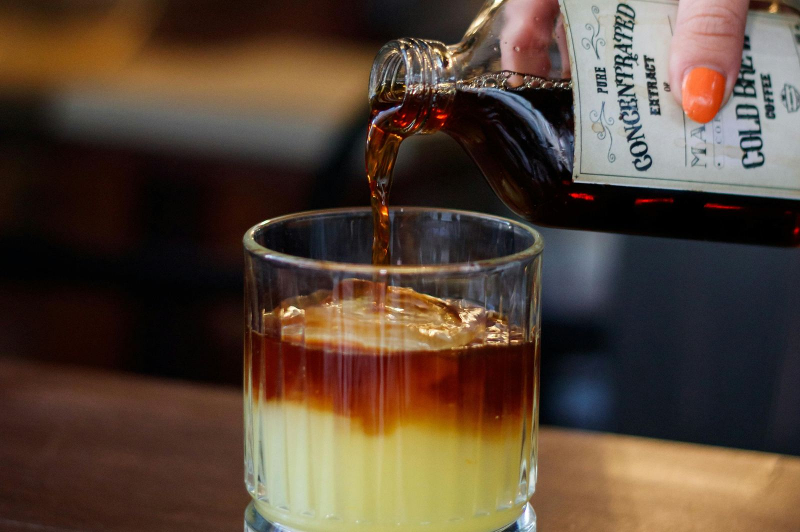
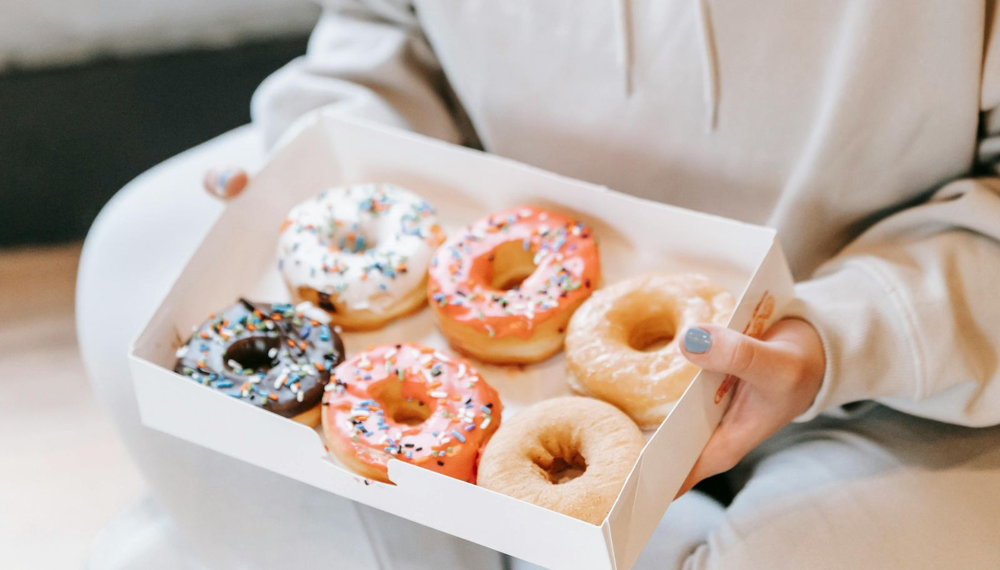

Most of us weren't taught to eat for our cycle. We were just taught to push through — take a painkiller, carry on, apologise for being tired. And when the cravings arrive, we follow them without question, because comfort is comfort and a hard week deserves it.
But here's what nobody really explained: what you eat during your period can genuinely shift how you experience it. Not eliminate it — not make it disappear — but soften it, support it, give your body what it's quietly running out of. And at the same time, some of what you instinctively reach for is making the bloating tighter, the cramps louder, the mood dip deeper. Not because you did something wrong, but because the mechanism was never explained.
This is both sides of that story. What to lean into, and what to let go of — at least for a week. Neither half is about restriction. It's about understanding what's actually happening so you can choose differently, from a place of care rather than discipline.
What you eat this week isn't a diet. It's a form of care — and your body will feel the difference, quietly, in the best way.

Oily fish like salmon and mackerel bring iron, omega-3s, and vitamin D together — exactly what a depleted body needs.
Start With Hydration
Before anything else: water. Staying well hydrated is one of the most underrated things you can do during your period. It helps reduce the severity of cramping, eases the headaches that often come with hormonal shifts, and counteracts the water retention that makes bloating worse. Aim for at least eleven to twelve cups a day. If plain water feels relentless, herbal teas count — and some of them do double duty.
Peppermint tea is particularly worth reaching for. Research suggests it can soothe the physical, digestive, and psychological symptoms that cluster together during menstruation — the cramps, the bloating, the low-grade irritability. It's also the gentlest swap for a second cup of coffee. Warm, fragrant, and genuinely calming.
Rebuild Your Iron
Iron is the quiet casualty of every period. Bleeding depletes it, and when levels drop — even slightly — you feel it as fatigue, muscle heaviness, light-headedness, and the particular kind of dizziness that comes out of nowhere when you stand up. These aren't signs of weakness. They're signs of depletion. The answer is iron-rich food, and there is plenty of it.
Calm the Inflammation
Cramps are, at their root, an inflammatory response. Your uterus releases compounds called prostaglandins to trigger contractions, and the more inflammatory your diet, the louder those signals tend to be. Two kitchen staples work directly against this.
Ginger has genuine anti-inflammatory and muscle-relaxing properties — studies show it can ease cramping, nausea, and body aches during menstruation. A warm ginger tea in the morning is the most effortless way to use it. Keep it moderate: around four grams a day is a sensible ceiling before it starts to cause digestive discomfort.
Turmeric, and its active compound curcumin, is similarly anti-inflammatory. Add it to soups, rice, scrambled eggs, or a simple golden latte with warm oat milk. It pairs beautifully with black pepper, which significantly increases absorption.

A warm cup of ginger tea in the morning — one of the simplest and most comforting choices you can make during your period.
The Satisfying Ones — Fruit, Nuts, Chocolate
This isn't about deprivation. It's about choosing the versions that actually help you feel better rather than worse an hour later.
Fruit handles sugar cravings without the glucose crash. Berries, watermelon, pears, apples, and grapes are high in water content and antioxidants — they satisfy the sweet instinct while keeping your blood sugar steady, which makes a noticeable difference to mood and energy through the day.
Nuts are deeply satisfying and rich in magnesium, healthy fats, and protein. Almonds and walnuts in particular are worth keeping close this week. If you'd rather not eat them plain, stir nut butter into oats or add a handful to a smoothie.
Dark chocolate — at least 80 to 85% cacao — is not just permitted but genuinely beneficial. It is rich in magnesium, which supports muscle relaxation and helps with cramping, and research suggests it can improve both cognitive and physical performance during menstruation. A small square or two is a considered choice, not a guilty one.
Flaxseeds round out the week beautifully. They are high in fibre, which helps manage the constipation that is, annoyingly, a common period companion, and rich in plant-based omega-3s. Stir them into yogurt, oats, or a smoothie — a tablespoon goes a long way.
Support Your Gut
Your gut microbiome is more connected to your hormones than most people realise, and menstruation can disrupt it in small but noticeable ways. Probiotic-rich foods help stabilise this. Yogurt with live cultures and kombucha both support the gut lining and the vaginal microbiome, which can be more vulnerable to imbalance during your period. Choose plain yogurt without added sugar, and kombucha varieties that aren't sweetened heavily.
Now — What to Put Down
The craving for comfort food is completely real. So is the fact that most comfort food makes everything worse. Here's what's quietly amplifying your symptoms.

Understanding why certain foods make things worse is the first step to choosing differently.
The Main Culprits
Two processes drive most period symptoms: inflammation and water retention. Prostaglandins — the compounds your uterus releases to trigger contractions — are inflammatory by nature. Your body is also, for hormonal reasons, more prone to holding onto sodium during this time. The foods below either feed those two processes directly, or disrupt the sleep and hormonal balance you need to recover.
The cravings are real. But what you reach for this week will either quiet your symptoms or amplify them — and now you know the difference.

The craving is your body asking for comfort. The question is which version of comfort actually delivers it.
Why the Cravings Feel So Convincing
Understanding why you crave these things — specifically during your period — makes it easier not to feel like you failed every time you reach for them.
In the days before your period, progesterone drops. This lowers serotonin, which is partly why mood dips and the craving for sugar and carbohydrates intensifies — your brain is looking for the fastest route to a dopamine response. Iron loss during bleeding drives fatigue, which the body interprets as a need for quick energy, which reads as a craving for anything fast and calorie-dense.
The cravings aren't irrational. They're your body problem-solving with limited information. The salt, the sugar, the coffee — they do offer a short-term lift. The issue is that they borrow against your comfort rather than contribute to it. Twenty minutes of relief, followed by everything you were managing before, slightly louder.
When you understand the mechanism, the swap stops feeling like discipline. It starts feeling like a choice you make for yourself — because you know better now, and that changes things.
One swap at a time.
You don't have to change everything. Pick two or three things and start there. A glass of warm ginger tea instead of the second coffee. A handful of spinach in your lunch. A square of dark chocolate instead of the sweet bag. Put down the crisps, even once. The changes are small and they add up — quietly, in the best way. Not as punishment for what you were eating before. As relief from something that was quietly making a hard week harder than it needed to be.